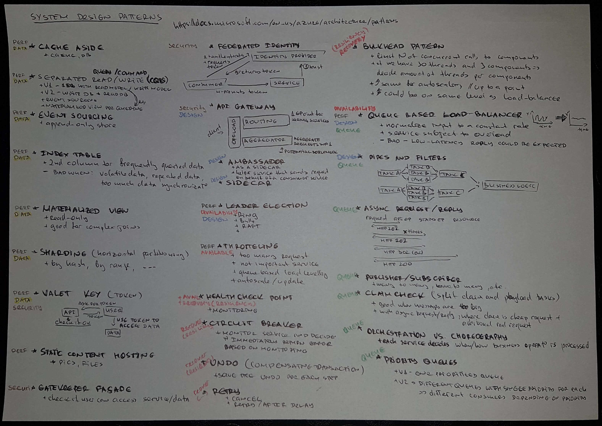
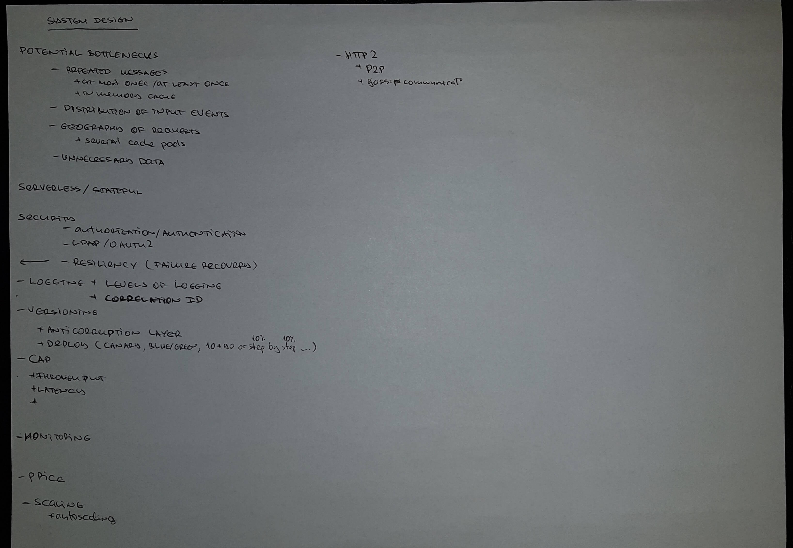

Distributed Systems Patterns
Distributed Patterns
- see in [dist]
- 
- 
- see in [micropat]
- [micropat] saga + aggregates + domain event (state changes) per aggregate
- This is a way to manage data consistency across microservices in distributed transaction scenarios. A saga is a sequence of transactions that updates each service and publishes a message or event to trigger the next transaction step. If a step fails, the saga executes compensating transactions that counteract the preceding transactions.
- semantic lock (transaction step is in PENDING state and is not yet committed) telling other transactions to wait.
- pessimistic view
- reread value
- [micropat] events and snapshot of events
- [micropat] API composition or Command Query Responsibility Segregation (CQRS)
- CQRS - Instead of DB and a separate search log that is periodically updated => Implement a query that needs data from several services by using events to maintain a read-only view that replicates data from the services
- separate the write and read model and maintain the read with events from services
- The command side modules and data model implement create, update, and delete operations (abbreviated CUD—for example, HTTP POSTs, PUTs, and DELETEs). The query-side modules and data model implement queries (such as HTTP GETs). The query side keeps its data model synchronized with the command-side data model by subscribing to the events published by the command side.
- see [bael-cqrs]
- commands (writes) are aggregated
Aggregator.handleCommand() - queries (reads)
Projectoris responsible to project the write model into the read modelProjecto.project(...)- may lead to additional complexity due to code duplication and having two models.
- the example with CQRS + Events is a good one.
- commands (writes) are aggregated
- CQRS - Instead of DB and a separate search log that is periodically updated => Implement a query that needs data from several services by using events to maintain a read-only view that replicates data from the services
- [micropat] API Gateways
- Examples of reactive abstractions for the JVM include the following:
- Java 8 CompletableFutures
- Project Reactor Monos
- RxJava (Reactive Extensions for Java) Observables, created by Netflix specifically to solve this problem in its API gateway
- Scala Futures
- Another option is using GraphQL or with Netflix Falcor
- Examples of reactive abstractions for the JVM include the following:
- [micropat] Service mesh + sidecar
Additional
- see in [spring] + [piotr]
- Service Discovery - Clients need to find micro-services instances.
- register/un-register services and their instances
- client calls logical endpoint of a servies, and is then routed to an instance + load balancing
- detect non-healthy instances
- Client-Side routing: client communicates with Service-Discovery to find where to put the request.
- Server-Side routing: Service-Discovery exposes a proxy for each service, where all requests are sent to, which send the request to a proper instance on behalf of the client.
- Edge-Server - Expose only part of the services to the outside world, where all incoming request will go to.
- Partial overlap with API Gateway.
- Use OAuth2, API keys, etc to allow access.
- Configuration Server - get complete picture of the configuration landscape, update one place only.
- Centralized Log Analysis - get an overview of what is going on, find errors and get reports for the overall system.
- Distributed tracing - correlation ID
- Control loop - compare actual with desired state
- Container orchestration scripts
Some Implementations
| Pattern | Implementation | Replaced By |
|---|---|---|
| Discovery Service | Netflix Eureka | Netflix Eureka, Spring Cloud load balancer, Zookeeper |
| Client Side Load Balancer | Netflix Ribbon | Spring Cloud load balancer |
| Edge Server | Netflix Zuul | Spring Cloud Gateway (API Gateway) + Spring Security OAuth, K8S ingress resource |
| Circuit Breaker | Netflix Hystrix | Resilience4j |
| Centralized Configuration | Spring Cloud Configuration Server, K8S config maps and secrets | |
| Distributed Tracing | Spring Cloud Sleuth, Zipkin, Jaeger |
- Sleuth adds Correlation IDs (or TraceID) and trancing data is send to Zipkin
- ngrok for tunneling internet to K8S cluster
- Itsio (combination of several tools, grafana, prometheus, Jaeger, kiali etc), as a separate container in the pod.
Sources
- [dist] Distributed Patterns - Microsoft
- [spring] Larsson - Hands on Microservices with Spring
- [piotr] Spring + Elasticsearch, Hazelcast, etc..
- [micropat] Chris Richardson - MicroServices Patterns
- [bael-cqrs] Baledung - CQRS and Event Sourcing in Java